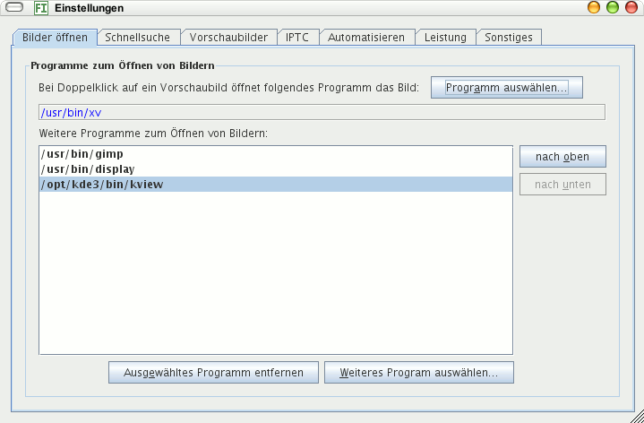

Wählen Sie ein Programm aus durch Klick auf die Schaltfläche Programm auswählen, das bei Doppelklick auf ein Vorschaubild die Original-Bilddatei öffnet. Das kann ein Bildbetrachter sein oder eine Bildbearbeitung.
Hier können Sie mehrere Programme hinzufügen, die zum Öffnen von Bildern angeboten werden vom Kontextmenü im Fenster mit den Vorschaubildern.
